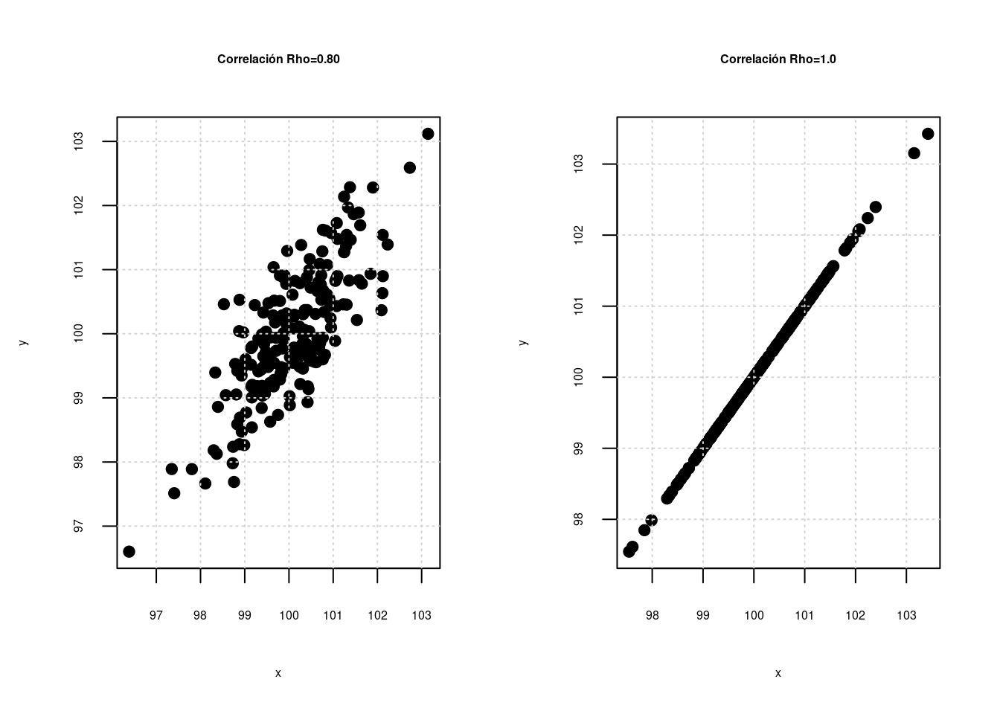
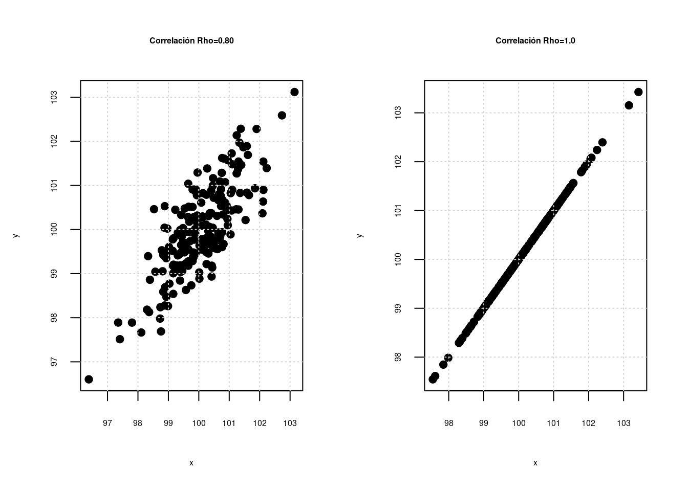

Modelo de regresión lineal simple
Módulo 5- Unidad 5.1
dgonzalez
Guía de aprendizaje 5.1

1. Introducción
Una de las aplicaciones mas importantes de la estadística corresponde a al modelo de regresión lineal. Esta técnica permite medir la relación que pueda existir entre una variable llamada variable respuesta y un conjunto de variables independientes. Casos como la estimación de las ventas a partir de los gastos en publicidad, el consumo de un producto a partir de su precio, el precio de una casa a partir de sus características, la relación entre la resistencia a la compresión de un determinado concreto y la cantidad de uno de sus componentes, entre otros
El siguiente documento contiene los pasos que deberá realizar para alcanzar el objetivo planteado
2. Objetivos de la unidad
Al finalizar la unidad el estudiante estará en capacidad de PROPONER soluciones mediante la CONSTRUCCIÓN, VALIDACIÓN DE SUPUESTOS e INTERPRETACIÓN de resultados obtenidos de modelos de regresión en situaciones reales que permitan la toma de decisiones informadas y la generación de políticas o conclusiones.
3. Duración
La presente unidad será desarrollada durante la comprendida entre 5 y el 11 de noviembre.
Ademas del material suministrado contaran con el acompañamiento del profesor en tres sesiones (Lunes, Miércoles y Viernes) y de manera asincrónica con foro de actividades académicas. Los entegables para esta unidad podrán enviarse a través de la plataforma Blackboard hasta el 11 de noviembre.
Para alcanzar los objetivos planteados se propone realizar las siguientes actividades
4. Cronograma de trabajo
| Actividad | Descripción |
|---|---|
| Actividad 511 | Resuelva los problemas presentados en el siguiente taller . La solución deberá ser entregada mediante formato pdf en link abierto para tal fin en Brightspace |
| Trabajo individual | |
| Fecha | 11 de Noviembre de 2020 |
| Hora | 23:59 hora local |
5. Criterios de evaluación
- Plantea el modelo correcto para dar solución a la situación planteada + Realiza los procesos de estimación y validación de los supuestos correspondiente al modelo de regresión
- Realiza de manera correcta la interpretación de los resultados obtenidos y plantea recomendaciones
6. Entregables
Actividad511.pdf Solución problemas planteados en el taller 511 en formato pdf
7. Presentaciones
Recursos
Introducción

https://es.wikipedia.org/wiki/Francis_Galton https://es.wikipedia.org/wiki/Regresi%C3%B3n_lineal
Modelo de Regresión lineal
En esta unidad estudiaremos la relación que puede existir entre dos variables o una variable y un conjunto de variables, mediante la construcción de un modelo lineal que represente dicha relación. Se partirá de un modelo general (modelo de Regresión Lineal Múltiple) y se tratará como caso particular el modelo de dos variables también llamado Modelo de Regresión Lineal Simple MRLS.
En unidades anteriores se estudiaron relaciones entre dos variables aleatorias, las cuales se puede medir a través del coeficiente de correlación (\(\rho\)), el cual puede presentar valores desde -1 hasta 1 como se representa en las siguientes gráficas :


 

La primera gráfica y la última gráfica representan relaciones perfectas entre dos variables, que tan solo se presentan cuando la relación es constante \(Y = a + bX\) (ej. en una igualdad matemática como distancia = velocidad x tiempo). No es el caso que se presenta al relacionar variables estadisticas. En este segundo caso a medida que el coeficiente de correlación aumenta la nube de puntos cambia, permitiendo ver una gama de posibilidades que pueden ser interpretadas dependiendo el signo como relaciones negativas o positivas (que se evidencian en la pendiente \(\beta_{0}\)) del modelo y por la magnitud desde relaciones muy fuertes a relaciones muy débiles (cerca de cero)
El modelo de regresión poblacional está determinado por:
\[\begin{equation*} Y=\beta_{0}+\beta_{1}X_{1}+\beta_{2}X_{2}+ \dots + \beta_{k}X_{k} +u \end{equation*}\]
Donde: + \(Y\),representa una la variable dependiente, también llamada variable respuesta o variable predicha.
- \(X_{1},X_{2},\dots, X_{k}\), corresponden a un conjunto de variables independientes o predictoras.
- \(\beta_{0},\beta_{1},\beta_{2},\dots, \beta{k}\) son un conjunto de constantes o parámetros del modelo (constantes) que deben ser estimadas a partir del conjunto de valores obtenidos en una muestra.
- \(u\) corresponde a una variable aleatoria no observable que representa todas las variables que no se incluyen en el modelo y corresponde a un componente aleatorio producto del azar de la naturaleza. Sin la presencia de esta variable en la estructura de la relación, el modelo formulado corresponderá a una relación matemática.
Un caso particular del modelo, ocurre cuando solo tiene una variable independiente, en este caso el modelo toma el nombre de Modelo de Regresión Lineal Simple con la siguiente estructura:
\[Y=\beta_{0} + \beta_{1} X + u\] En este caso es posible realzar una representación gráfica del modelo mediante una linea recta donde \(\beta_{0}\) corresponde al intercepto y \(\beta_{1}\) a la pendiente.
A partir de la obtención de una muestra de tamaño \(n\) se puede obtener el modelo estimado, cuya ecuación esta dada por: \[\begin{equation*} \widehat{E[y|X]}=b_{0}+b_{1}x_{1}+b_{2}x_{2}+\dots+b_{k}x_{k} \end{equation*}\]
Donde : \([b_{0}, b_{1}, \dots, b_{k}]\) representa el vector de estimadores de los coeficientes del modelo.
Como cada vez que se toma una muestra, por razones del azar los objetos medidos son diferentes, es claro que al realizar un procedimiento de estimación los valores de estos son diferentes, ratificando esto que \(\widehat{\beta}_{0},\widehat{\beta}_{1},\widehat{\beta}_{2},\dots, \widehat{\beta}_{k}\) son variables aleatorias
MRL-enfoque matricial
Para representar el modelo de manera matricial, se puede partir de la siguiente ecuación: \[\begin{equation*} Y_{i}=\beta_{0}+\beta_{1}X_{1i}+\beta_{2}X_{2i}+ \dots + \beta_{k}X_{ki} +u_{i} \hspace{.3cm} i=1,2,\dots,n \end{equation*}\]
Los valores \(\beta_{0},\beta_{1},\dots,\beta_{k}\) deben cumplir las siguientes igualdades:
\[\begin{eqnarray*} y_{1}&=&\beta_{0}+\beta_{1}x_{11}+\beta_{2}x_{21}+\dots+\beta_{k}x_{k1}+u_{1} \\ y_{2}&=&\beta_{0}+\beta_{1}x_{12}+\beta_{2}x_{22}+\dots+\beta_{k}x_{k2}+u_{2} \\ y_{3}&=&\beta_{0}+\beta_{1}x_{13}+\beta_{2}x_{23}+\dots+\beta_{k}x_{k3}+u_{3} \\ \vdots && \vdots \hspace{1cm} \vdots \hspace{1cm} \vdots \\ y_{n}&=&\beta_{0}+\beta_{1}x_{1n}+\beta_{2}x_{2n}+\dots+\beta_{k}x_{kn}+u_{n} \\ \end{eqnarray*}\]
En forma matricial las podemos escribir
\[y = X \beta + u\] Donde:
\[y = [y_{1},y_{2}, \dots, y_{n}]^{T}\] \[\beta =[\beta_{0},\beta_{1},\dots, \beta_{k}]^{T}\]
\[X= \begin{bmatrix} {1} &{x_{11}}&{x_{21}}& \dots & x_{k1} \\ {1} &{x_{12}}&{x_{22}}& \dots & x_{k2} \\ {1} &{x_{13}}&{x_{23}}& \dots & x_{k3} \\ \dots & \dots &\dots & \dots & \dots \\ {1} &{x_{1n}}&{x_{2n}}& \dots & x_{kn} \\ \end{bmatrix}\]
\[u =[u_{1},u_{2},\dots,u_{n}]^{T}\]
Estimación de coeficientes
El método Mínimos Cuadrados Ordinarios (MCO) se basa en la minimizar la suma de cuadrados de los errores (\(u\)), a través de la información contenida en una muestra
De la ecuación del modelo estimado \(\widehat{y} = X \widehat{\beta} + \widehat{u}\) se pueden despejar los residuales . Como los errores son variables no observables, el método hace uso de sus respectivos estimadores llamados residuales:
\[\begin{equation*} \widehat{u} = \widehat{y} - X\widehat{\beta} \end{equation*}\]
Ahora, la suma de cuadrado de los residuales se puede obtener al multiplicar el vector \(\widehat{u}^{T} \widehat{u}\)
\[\begin{equation*} SCRes=\sum_{i=1}^{n} \widehat{u}^{2}_{i} = \widehat{u}^{T} \widehat{u}= \begin{bmatrix}{\widehat{u}_{1}}\\ {\widehat{u}_{2}}\\ {\vdots}\\ {\widehat{u}_{n}}\\ \end{bmatrix}[\widehat{u}_{1},\widehat{u}_{2},\dots,\widehat{u}_{n}] \end{equation*}\]
\[\begin{eqnarray*} SCRes&=&[\widehat{y}-Xb]^{T}[\widehat{y}-Xb]\\ &=& y^{T}y -y^{T}Xb-b^{T}X^{T}y+b^{T}X^{T}Xb \\ &=& y^{T}y -2bX^{T}y+b^{T}X^{T}Xb \\ \end{eqnarray*}\]
Para encontrar los valores óptimos de los coeficientes, se debe derivar parcialmente con respecto al vector \(\beta\) e igualarlo a cero
\[\begin{equation*} \dfrac{\partial{SCRes}}{\partial{\beta}}= -2X^{T}+ 2X^{T}Xb=0 \end{equation*}\]
De la ecuación anterior se despeja \(b\) (\(\widehat{\beta}\))
\[\begin{eqnarray*} 2X^{T} &=& 2X^{T}Xb\\ (X^{T}X)^{-1}X^{T}y &=&(X^{T}X)^{-1}X^{T}X b\\ (X^{T}X)^{-1}X^{T}y&=& b \end{eqnarray*}\]
El estimador MCO de los coeficientes \(b\) es:
\[\widehat{\beta}_{_{MCO}}= b = (X^{T}X)^{-1}X^{T}y\]
Es claro que para poder realizar este proceso es condición necesaria que la matriz \((X^{T}X)\) sea invertible. En caso contrario los estimadores MCO no se pueden hallar. La versión del método MCO a partir de sumatorias se encuentra desarrollada en el texto guía (Walpole-2012 pp.395)
Para que la estimación por MCO sea valida y utilizada, se deben verificar que se cumplan los supuestos sobre los errores \(u\) y las pruebas de significancia global y unitarias
- \(S_1\): El valor esperado de \(u\) es cero.\(E[u]=0\) \(E[u]=0\)
- \(S_2\): Los errores tienen varianza constante. \(V[u_{i}]=\sigma^{2}\)
- \(S_3\): \(u\) es una variable con distribución normal. \(u \sim\) \(Normal\)
- \(S_4\): Los errores son independientes unos de otros \(E[u_i,u_j]\) que se entiende como la no autocorrelacion de los errores
- \(S_5\): Para el caso de regresión lineal múltiple se incluye el supuesto de no multicolinealidad. En caso de que se presenta multicolinealidad entre dos variables independientes da como resultado la imposibilidad de poder realizar la estimaciones mediante MCO
Ejemplo 1: Se quiere determinar si existe relación entre los ingresos que recibe una familia y el valor de su consumo. Con en este propósito se toma información de 12 hogares
| x | 24.3 | 12.5 | 31.2 | 28.0 | 35.1 | 10.5 | 23.2 | 10.0 | 8.5 | 15.9 | 14.7 | 15.0 |
| y | 16.2 | 8.5 | 15.0 | 17.0 | 24.2 | 11.2 | 15.0 | 7.1 | 3.5 | 11.5 | 10.7 | 9.2 |
El primer paso corresponde a construir una gráfica de dispersión, con el fin de poder visualizar el tipo de relación que se puede percibir entre las dos variables
x=c(24.3,12.5,31.2,28,35.1,10.5,23.2,10,8.5,15.9,14.7,15)
y=c(16.2,8.5,15,17,24.2,11.2,15,7.1,3.5,11.5,10.7,9.2)
plot(x,y, xlab = "Ingresos", ylab = "Consumo",
pch=21, bg="blue", xlim=c(0,35), ylim=c(0,25), las=1)En la gráfica se puede observar una nube de puntos que sugieren una relación positiva entre las dos variables. El objetivo entonces es determinar una ecuación que permita estimar esta relación que en este caso se representa por una linea recta (\(y=a+bx\)).
Esta recta representa la relación lineal entre las dos variables, en este caso tiene una pendiente positiva que mide la magnitud del cambio en la variable dependiente ante un cambio unitario en la variable independiente.
Para encontrar la los valores estimados del intercepto y de la pendiente, utilizaremos el método de mínimos cuadrados ordinario (MCO)
regresion=lm(y ~ x)
summary(regresion)
Call:
lm(formula = y ~ x)
Residuals:
Min 1Q Median 3Q Max
-4.1928 -0.5426 0.0088 0.8500 3.5613
Coefficients:
Estimate Std. Error t value Pr(>|t|)
(Intercept) 1.77788 1.58292 1.123 0.288
x 0.55817 0.07567 7.376 2.38e-05 ***
---
Signif. codes: 0 '***' 0.001 '**' 0.01 '*' 0.05 '.' 0.1 ' ' 1
Residual standard error: 2.251 on 10 degrees of freedom
Multiple R-squared: 0.8447, Adjusted R-squared: 0.8292
F-statistic: 54.41 on 1 and 10 DF, p-value: 2.38e-05De acuerdo con estos resultados obtenidos en R, muestra que la ecuación estimada es :
\[\widehat{y} = 1.77788 + 0.55817\]
Para validar estos resultados, para poder ser utilizados se debe:
- Validar que se cumplen los supuestos sobre \(u\)
- Verificar en los valores de los coeficientes mediante las pruebas de hipótesis individuales
Validación de supuestos
Los supuestos a validar se deben verificar sobre los residuales \(\widehat{u_{i}}\) que corresponde a la diferencia entre \(\widehat{y_{i}}\) y \(y\) y que son las realizaciones de los errores.( \(\widehat{u_{i}} = \widehat{y_{i}}-y_{i}\))
yhat=predict(regresion)
u=yhat-y
u 1 2 3 4 5 6 7
-0.8585544 0.2550230 4.1928284 0.4066799 -2.8303031 -3.5613199 -0.2725429
8 9 10 11 12
0.2595944 3.0223373 -0.8471942 -0.7169999 0.9504515 Supuesto 1
El valor esperado de los errores es cero \(E[u]=0\)
| \(Ho\) : \(\mu_{u} =0\) |
| \(Ha\) : \(\mu_{u} \neq 0\) |
summary(u) Min. 1st Qu. Median Mean 3rd Qu. Max.
-3.56132 -0.85003 -0.00876 0.00000 0.54262 4.19283 t.test(u, mu=0)
One Sample t-test
data: u
t = -1.0873e-14, df = 11, p-value = 1
alternative hypothesis: true mean is not equal to 0
95 percent confidence interval:
-1.363421 1.363421
sample estimates:
mean of x
-6.735394e-15 Supuesto 2
Los errores tienen varianza constante \(V[u]=\sigma^{2}\). Homoscedasticidad
Prueba de Goldfeld-Quandt
| \(Ho\) : no existe heteroscedasticidad (homoscedasticidad) |
| \(Ha\) : existe heteriscedastucidad |
lmtest::gqtest(y~x)
Goldfeld-Quandt test
data: y ~ x
GQ = 0.19285, df1 = 4, df2 = 4, p-value = 0.93
alternative hypothesis: variance increases from segment 1 to 2Supuesto 3
Los errores se distribuyen normal \(u\sim\) \(N(0,\sigma^{2})\)}\
| \(Ho\) : \(u \sim norm\) |
| \(Ha\) : \(u no \sim norm\) |
shapiro.test(u)
Shapiro-Wilk normality test
data: u
W = 0.94569, p-value = 0.5751Supuesto 4
Los errores son independientes \(E[u_i,u_j]=0\)}\
| \(Ho\) : \(E[u_{i}u_{j}] = 0\) : los erreres son independients |
| \(Ha\) : \(E[u_{i}u_{j}] \neq 0\) : los errores no son independientes |
lmtest::dwtest(y~x)
Durbin-Watson test
data: y ~ x
DW = 1.5517, p-value = 0.1769
alternative hypothesis: true autocorrelation is greater than 0P.de significancia individuales
Después de verificar el cumplimiento de los supuestos sobre los errores se pasa a analizar los resultados de la estimación.
Las pruebas a realizar corresponden a la validación si los resultados obtenidos sobre el intercepto y la pendiente son significativamente diferentes de cero:
Coefficients: Estimate Std. Error t value Pr(>|t|) (Intercept) 1.77788 1.58292 1.123 0.288 x 0.55817 0.07567 7.376 2.38e-05 *** --- Signif. codes: 0 ‘***’ 0.001 ‘**’ 0.01 ‘*’ 0.05 ‘.’ 0.1 ‘ ’ 1
| parámetro | \(Ho\) | \(Ha\) | \(EdeP\) | valor-p |
|---|---|---|---|---|
| intercepto \(\beta_{0}\) | \(Ho: \beta_{0} = 0\) | \(Ha: \beta_{0} \neq 0\) | \(EdeP:\) \(t=1,123\) | \(valor-p:\) \(0.288\) |
| pendiente \(\beta_{1}\) | \(Ho: \beta_{1} = 0\) | \(Ha: \beta_{1} \neq 0\) | \(EdeP :\) \(t=7.376\) | \(valor-p:\) \(0.00005\) |
ANOVA
La ANOVA corresponde a una prueba de hipótesis conjunta sobre todos las pendientes del modelo de manera conjunta:
\(Ho: \beta_{1} = \beta_{2} = ....= \beta_{k} = 0\) \(Ha: \beta_{j}\) es diferente de cero
Esta prueba se fundamenta en la comparación de dos varianza : La varianza relacionada con el modelo (\(\sigma^{2}\)) y la varianza relacionada con los errores (\(\sigma^{2}_{u}\)).
anova(regresion)Analysis of Variance Table
Response: y
Df Sum Sq Mean Sq F value Pr(>F)
x 1 275.590 275.590 54.408 2.38e-05 ***
Residuals 10 50.652 5.065
---
Signif. codes: 0 '***' 0.001 '**' 0.01 '*' 0.05 '.' 0.1 ' ' 1Ahora podemos realizar la interpretación de los resultados
\[\widehat{y} = 1.77788 + 0.55817 x\]
\(\widehat{\beta_{0}} = 1.7788\), se interpreta como la parte del consumo que no depende de los ingresos al cual se le llama consumo autónomo.
\(\widehat{\beta_{1}} = 0.55817\) . Correspondiente a la estimación de la pendiente, indica que por cada aumento unitario de los ingresos, el consumo se aumenta en 0.55817 unidades.
Otro indicador importante en el análisis corresponde al coeficiente de determinación (\(R^{2}\)), que en este caso tiene un valor de \(0.8447\) e indica que el modelo explica un \(84.47\)% de la variación o del comportamiento de la variable \(Y\)
Ejemplo 2: Un fabricante de equipos de aire acondicionado tiene problemas en la etapa de montaje, debido principalmente a la falta de una biela, pues debido a su peso no satisface las especificaciones establecidas para el producto por sobrepeso. Para reducir este costo, el fabricante estima que estudiando la relación entre el peso de la barra en bruto y su peso final, es probable encontrar una relación entre ellas y de esta manera reducir el problema mediante la detección de elementos que probablemente no cumplan con las condiciones exigidas para el producto.
En el estudio se midieron un total de 25 (x, y) pares de barras, siendo \(X\) el peso de la pieza colada en espera de ser procesada (materia prima) y \(Y\) el peso de una biela terminada que forma parte del producto final. Se requiere estimar un modelo que permita predecir el valores del peso futuro de la biela terminada como función del peso bruto del bloque de metal. Los datos recogidos se muestran a continuación:
Antes de realizar la estimación debemos visualizar mediante un diagrama de dispersión la relación lineal entre las variables. \
| 1 | 2 | 3 | 4 | 5 | 6 | 7 | 8 | 9 | 10 | 11 | 12 | 13 | |
|---|---|---|---|---|---|---|---|---|---|---|---|---|---|
| x | 2.745 | 2.700 | 2.690 | 2.680 | 2.675 | 2.670 | 2.665 | 2.660 | 2.655 | 2.655 | 2.650 | 2.650 | 2.645 |
| y | 2.080 | 2.045 | 2.050 | 2.005 | 2.035 | 2.035 | 2.020 | 2.005 | 2.010 | 2.000 | 2.000 | 2.005 | 2.015 |
| 14 | 15 | 16 | 17 | 18 | 19 | 20 | 21 | 22 | 23 | 24 | 25 | |
|---|---|---|---|---|---|---|---|---|---|---|---|---|
| y | 2.635 | 2.630 | 2.625 | 2.625 | 2.620 | 2.615 | 2.615 | 2.615 | 2.615 | 2.590 | 2.590 | 2.565 |
| x | 1.990 | 1.990 | 1.995 | 1.985 | 1.970 | 1.985 | 1.990 | 1.995 | 1.990 | 1.975 | 1.995 | 1.955 |
x : peso barra en bruto y : peso producto final
y=c(2.745, 2.700, 2.690, 2.680, 2.675, 2.670, 2.665, 2.660, 2.655, 2.655, 2.650, 2.650, 2.645, 2.635, 2.630, 2.625, 2.625, 2.620, 2.615, 2.615, 2.615, 2.615, 2.590, 2.590, 2.565)
x=c(2.080, 2.045, 2.050, 2.005, 2.035, 2.035, 2.020, 2.005, 2.010, 2.000, 2.000, 2.005, 2.015, 1.990, 1.990, 1.995, 1.985, 1.970, 1.985, 1.990, 1.995, 1.990, 1.975, 1.995, 1.955)
plot(x,y, xlab = "peso inicial", ylab = "peso final", pch=21, bg="blue", las=1)En la gráfica se puede observar que existe una posible relación positiva entre las variables, la cual se puede representar a través de una linea recta con pendiente positiva.
Inicialmente se plantea el modelo formado por una variable respuesta (\(y\)) y una variable independiente (\(x\)), una variable aleatoria no observable o error (\(u\)) y dos coeficientes \(\beta_{0}\) y \(\beta_{1}\) y un conjunto de 25 observaciones.
\[y_{i}=\beta_{0}+\beta_{1}x_{i}+u_{i} \hspace{.7cm}\text{ con }\hspace{.2cm} i=1,2,3,\dots 25\]
Este modelo representa 25 igualdades que originan un sistema matricial \(y= X \beta + u\), el cual se resuelve mendiante MCO con el siguiente resultado:
\[\begin{eqnarray*} b&=&(X^{T}X)^{-1}X^{T}y \\ &&\\ &=&\begin{bmatrix} {n} &{\displaystyle\sum_{i=1}^{n} x_{i}}\\ {\displaystyle\sum_{i=1}^{n} x_{i}}&{\displaystyle\sum_{i=1}^{n} x^{2}_{i}}\\ \end{bmatrix}^{-1} \begin{bmatrix} {\displaystyle\sum_{i=1}^{n} y_{i}}\\ {\displaystyle\sum_{i=1}^{n} y_{i}x_{i}} \end{bmatrix} \\ &&\\ &=& \begin{bmatrix} {25.00} &{50.1200}\\ {50.12} &{100.4986}\\ \end{bmatrix} ^{-1} \begin{bmatrix} {66.0800}\\ {132.5007}\\ \end{bmatrix}\\ &&\\ &=& \begin{bmatrix} {222.4160} & {-110.9218}\\ {-110.9218}& { 55.3281}\\ \end{bmatrix} \begin{bmatrix} {66.0800}\\ {132.5007}\\ \end{bmatrix}\\ &&\\ \begin{bmatrix} {b_{0}}\\ {b_{1}}\\ \end{bmatrix}&=& \begin{bmatrix} {0.03753679}\\ {1.29971229}\\ \end{bmatrix} \end{eqnarray*}\]
Mediante operaciones matriciales podemos obtener los estimadores de los coeficientes así:
y=c(2.745, 2.700, 2.690, 2.680, 2.675, 2.670, 2.665, 2.660, 2.655, 2.655, 2.650, 2.650, 2.645, 2.635, 2.630, 2.625, 2.625, 2.620, 2.615, 2.615, 2.615, 2.615, 2.590, 2.590, 2.565)
x=c(2.080, 2.045, 2.050, 2.005, 2.035, 2.035, 2.020, 2.005, 2.010, 2.000, 2.000, 2.005, 2.015, 1.990, 1.990, 1.995, 1.985, 1.970, 1.985, 1.990, 1.995, 1.990, 1.975, 1.995, 1.955)
unos=rep(1,25) # vector de unos
X=matrix(c(unos,x),nrow=25) # matriz X
# Estimador MCO - Enfoque matricial
b=solve(t(X)%*%X)%*%(t(X)%*%y)
b # vector de estimadores [,1]
[1,] 0.03753679
[2,] 1.29971229Finalmente el modelo estimado por MCO corresponde a la ecuación:
\[ \widehat{y}= 0.03753679 + 1.29971229 \hspace{.2cm}x\]
El signo esperado para el coeficiente \(b_{1}\), está de acuerdo con los resultados encontrados. Como se ha mencionado anteriormente \(b_{1}\) corresponde a la estimación de la pendiente de la recta de regresión muestral y su signo positivo indica que para un mayor peso de la barra antes de iniciar el proceso, el producto final tendrá un mayor peso.
Para realizar la estimación de los coeficientes en R se debe correr el siguiente codigo:regresion=lm(y~x)
summary(regresion)
Call:
lm(formula = y ~ x)
Residuals:
Min 1Q Median 3Q Max
-0.040463 -0.011457 0.002044 0.007534 0.036540
Coefficients:
Estimate Std. Error t value Pr(>|t|)
(Intercept) 0.03754 0.23810 0.158 0.876
x 1.29971 0.11875 10.945 1.36e-10 ***
---
Signif. codes: 0 '***' 0.001 '**' 0.01 '*' 0.05 '.' 0.1 ' ' 1
Residual standard error: 0.01597 on 23 degrees of freedom
Multiple R-squared: 0.8389, Adjusted R-squared: 0.8319
F-statistic: 119.8 on 1 and 23 DF, p-value: 1.356e-10En el listado para cada estimación se presenta una prueba-t individual sobre la significancia de cada coeficiente asi:
| parámetro | \(Ho\) | \(Ha\) | \(EdeP\) | valor-p |
|---|---|---|---|---|
| intercepto \(\beta_{0}\) | \(\beta_{0} =0\) | \(\beta_{0}\neq 0\) | $ T = 0.158$ | \(0.876\) |
| pendiente \(\beta_{1}\) | \(\beta_{1} =0\) | \(\beta_{1} \neq 0\) | $ T = 10.945$ | \(0.0000\) |
Indicando que no se rechaza la hipótesis nula y por tanto se asume que \(Ho\) es verdad , \(\beta_{0}=0\). En este caso se recomienda que aunque la prueba de hipótesis indique que el intercepto es no significativo, se debe dejar en el modelo, pues el no incluirlo puede generar que la o las pendientes estimadas presenten un sesgo.
Para el caso de la pendiente los resultados son los siguientes.
Lo cual ratifica que el modelo es valido y existe una relación lineal entre la variable de la barra inicial y el peso del producto terminado
Además de los coeficientes estimados y de la validación de sus respectivas pruebas de hipótesis individuales, existe una medida para determinar el grado de explicación de la variable dependiente que es estimada por el modelo (\(R^{2}=83.9\%\)). En este caso el modelo explica el 83.9% del comportamiento de \(y\) o de su variación.
Finalmente la salida reporta el valor del estadístico F (119.8) y su valor-p asociado (0.0000), correspondiente al análisis de varianza o ANOVA , útil en análisis de regresión lineal múltiple. Para el caso del modelo de regresión lineal simple el análisis de varianza arroja los mismos resultados que la hipótesis individual para \(\beta_{1}\)\
Validación de supuestos
El método de MCO, no requiere ningún supuesto de tipo estadístico, pues es un método que se basa en la optimización matemática. Sin embargo cuando se requiere realizar inferencia - construcción de intervalos de confianza o la realización de pruebas de hipótesis asociadas con los resultados obtenidos - es necesario plantear y verificar el cumplimiento de supuestos estadístico sobre las variables que intervienen en el modelo. Algunos de ellos se realizan sobre las variables independientes y otros sobre la variable no observable error (\(u\)). Haremos énfasis sobre el cumplimiento de los siguientes supuestos, pues su violación genera estimaciones ineficientes y sesgados.
Supuesto 1
\(E[u]=0\) . El modelo esta completo. Este supuesto garantiza que al hacer estimaciones el componente aleatorio desaparezca. Se valida mediante el calculo de la media de los residuales.
Supuesto 2
\(V[u]=\sigma^{2}\). La varianza de los errores es constante. El supuesto de HOMOSCEDASTICIDAD o varianza constante hace que los estimadores MCO sean eficientes. Este supuesto se pude validar mediante la realización de otra regresión donde se toma como regresora una proxis de la varianza (\(u^{2}\)) y como variables independientes las mismas del modelo. Esta prueba se conoce como Test de White. En caso de que los coeficientes asociados con las variables independientes sean no significativos, este resultado será indicio de que la varianza es constante.
\[\widehat{u}^{2} = \alpha_{0} + \alpha_{1} x + \epsilon \]
Supuesto 3
\(Cor[u_{i},u_{i-1}]=0\). Los errores no están auto-correlacionados. El supuesto de no autocorrelación de errores se puede verificar mediante el estadístico Durbin-Watson. Para determinar si se rechaza o no el cumplimiento de este supuesto se debe construir una región de rechaza partir de los datos obtenidos en la table de D-W
Supuesto 4
\(u \sim N(0, \sigma^{2})\) . Para verificar este supuesto se puede construir una gráfica de los residuales \(qqnorm\) y una prueba de hipótesis de normalidad
Es necesario antes de utilizar el modelo, verificar el cumplimiento de los anteriores supuestos.\
Analisis de resultados
Listado 1. Supuesto de modelo completo
residuos=regresion$residuals
summary(residuos) Min. 1st Qu. Median Mean 3rd Qu. Max.
-0.040463 -0.011457 0.002044 0.000000 0.007534 0.036540 t.test(residuos)
One Sample t-test
data: residuos
t = 8.8708e-17, df = 24, p-value = 1
alternative hypothesis: true mean is not equal to 0
95 percent confidence interval:
-0.00645138 0.00645138
sample estimates:
mean of x
2.772847e-19 Por un lado el promedio de los residuales es cercano a cero y por otro lado la prueba de hipótesis Ho: \(\mu_{u}=0\) vs Ha: \(\mu_{u} \neq 0\), no se rechaza, asumimos que el valor esperado de los errores es cero.
Listado 2 Supuesto de no autocorrelación de errores
# Es necesario cargar el paquete
library(lmtest)
dwtest(y~x)
Durbin-Watson test
data: y ~ x
DW = 1.518, p-value = 0.07668
alternative hypothesis: true autocorrelation is greater than 0Los resultados indican que no se cumple el supuesto de no autocorrelacion, los errores estan correlacionados
Listado 3 Supuesto de normalidad de los errores
shapiro.test(residuos)
Shapiro-Wilk normality test
data: residuos
W = 0.96464, p-value = 0.5143El valor-p correspondiente a la prueba de Shapiro-Wilk indica que los errores se pueden asumir como normales
Listado 4
# Supuesto de varianza constante de errores o homoscedasticidad
summary(lm(residuos^2 ~ x))
Call:
lm(formula = residuos^2 ~ x)
Residuals:
Min 1Q Median 3Q Max
-2.749e-04 -1.913e-04 -1.081e-04 -8.540e-06 1.380e-03
Coefficients:
Estimate Std. Error t value Pr(>|t|)
(Intercept) 0.004942 0.005957 0.83 0.415
x -0.002348 0.002971 -0.79 0.437
Residual standard error: 0.0003994 on 23 degrees of freedom
Multiple R-squared: 0.02645, Adjusted R-squared: -0.01588
F-statistic: 0.6248 on 1 and 23 DF, p-value: 0.4373Para la verificación del supuesto de homoscedasticidad indica que la variable independiente no esta relacionada con la varianza. Se puede suponer la varianza de los errores es constante.
Código R
y=c(2.745, 2.700, 2.690, 2.680, 2.675, 2.670, 2.665, 2.660, 2.655, 2.655, 2.650, 2.650, 2.645, 2.635, 2.630, 2.625, 2.625, 2.620, 2.615, 2.615, 2.615, 2.615, 2.590, 2.590, 2.565)
x=c(2.080, 2.045, 2.050, 2.005, 2.035, 2.035, 2.020, 2.005, 2.010, 2.000, 2.000, 2.005, 2.015, 1.990, 1.990, 1.995, 1.985, 1.970, 1.985, 1.990, 1.995, 1.990, 1.975, 1.995, 1.955)
# Descriptivas
summary(y); summary(x) Min. 1st Qu. Median Mean 3rd Qu. Max.
2.565 2.615 2.645 2.643 2.665 2.745 Min. 1st Qu. Median Mean 3rd Qu. Max.
1.955 1.990 2.000 2.005 2.015 2.080 # Diagrama de dispersión X vs Y
plot(y,x, main="Diagrama de dispersión",xlab="X:Peso inicial",
ylab="Y:Peso final", pch=19)
# Estimación por MCO
regresion=lm(y~x)
summary(regresion)
Call:
lm(formula = y ~ x)
Residuals:
Min 1Q Median 3Q Max
-0.040463 -0.011457 0.002044 0.007534 0.036540
Coefficients:
Estimate Std. Error t value Pr(>|t|)
(Intercept) 0.03754 0.23810 0.158 0.876
x 1.29971 0.11875 10.945 1.36e-10 ***
---
Signif. codes: 0 '***' 0.001 '**' 0.01 '*' 0.05 '.' 0.1 ' ' 1
Residual standard error: 0.01597 on 23 degrees of freedom
Multiple R-squared: 0.8389, Adjusted R-squared: 0.8319
F-statistic: 119.8 on 1 and 23 DF, p-value: 1.356e-10 confint(regresion) 2.5 % 97.5 %
(Intercept) -0.4550101 0.5300837
x 1.0540506 1.5453740 plot(y~x, xlab = "Peso inicial", ylab = "Peso final", pch=19)
abline(regresion)# Analisis de la varianza
anova(regresion)Analysis of Variance Table
Response: y
Df Sum Sq Mean Sq F value Pr(>F)
x 1 0.0305315 0.0305315 119.78 1.356e-10 ***
Residuals 23 0.0058625 0.0002549
---
Signif. codes: 0 '***' 0.001 '**' 0.01 '*' 0.05 '.' 0.1 ' ' 1# Residuos
residuos <- rstandard(regresion)
valores.ajustados <- fitted(regresion)
plot(valores.ajustados, residuos)# Diagnostico de normalidad
qqnorm(residuos, main="Normalidad de los Residuales")
qqline(residuos)
plot(y,x, xlab = "peso-F", ylab = "peso-b")
abline(y~x)
# validación de supuestos del modelo
residuos=rstandard(regresion)
valores.ajustados <- fitted(regresion)
plot(valores.ajustados, residuos) dwtest(y~x)
Durbin-Watson test
data: y ~ x
DW = 1.518, p-value = 0.07668
alternative hypothesis: true autocorrelation is greater than 0 bgtest(y~x)
Breusch-Godfrey test for serial correlation of order up to 1
data: y ~ x
LM test = 1.4445, df = 1, p-value = 0.2294 resettest(y~x , power=2, type="regressor")
RESET test
data: y ~ x
RESET = 0.18173, df1 = 1, df2 = 22, p-value = 0.674 shapiro.test(residuos)
Shapiro-Wilk normality test
data: residuos
W = 0.9658, p-value = 0.5415Hasta ahora se ha presentado el modelo de regresión lineal mediante una función de linea recta \(y= \beta_{0} + \beta_{1} x + u\), asumiendo que \(y\) y \(x\) son variables que se ajustan a este modelo.
A continuación se presentan situaciones donde la relación no es lineal, teniendo que realizarse transformaciones en \(x\), en \(y\) o en ambas con el fin de lograr que el modelo resultante se lineal en los parámetros:
Es necesario realizar un grafico de puntos que nos perita tener una primera impresión de la relación que puede existir entre las variables. A continuación se presentan algunas relaciones que pueden ser linealizadas, permitiendo realizar una estimación por MCO.
A continuación se presentan algunas formas de linealización que permiten la estimación de relaciones no lineales:
| Función | Transformación | Forma lineal | ||
|---|---|---|---|---|
| (1) Modelo exponencial | \(Y = \alpha e^{\beta X}\) | \(Y^{*}=ln(Y)\) | \(Y^{*} =ln(\alpha) + \beta X\) | |
| (2) Modelo potencial | \(Y = \alpha X^{\beta}\) | \(Y^{*}=log(Y)\) | \(X^{*}=log(X)\) | \(Y^{*} =log(\alpha) + \beta X^{*}\) |
| (3) Modelo reciproco | $Y = + \(| |\)X^{*}=$ | \(Y =\alpha + \beta X^{*}\) | ||
| (4) Modelo hiperbólico | \(Y=\dfrac{X}{\alpha X + \beta }\) | \(Y^{*}=\dfrac{1}{Y}\) | \(X^{*}=\dfrac{1}{X}\) | \(Y^{*} =\alpha + \beta X^{*}\) |
curve(.2*x^2, from=1, to=20, n=500, xlab="x", ylab="y",col="blue", lwd=2, main="(1a)")
curve(.2*x^1, from=1, to=20, n=500, xlab="x", ylab="y",col="red", lwd=2, main="(1b)")
curve(.2*x^0.1, from=1, to=20, n=500, xlab="x", ylab="y",col="green", lwd=2, main="(1c)")curve(exp(-2*x), from=1, to=20, n=500, xlab="x", ylab="y",col="blue", lwd=2, main="(1a)")curve(exp(2*x), from=1, to=20, n=500, xlab="x", ylab="y",col="green", lwd=2, main="(1c)")curve(2-3*log(x), from=1, to=20, n=500, xlab="xvalue", ylab="yvalue",col="blue", lwd=2, main="(1a)")curve(2+log(x), from=1, to=20, n=500, xlab="xvalue", ylab="yvalue",col="red", lwd=2, main="(1b)")curve(2+3*log(x), from=1, to=20, n=500, xlab="xvalue", ylab="yvalue",col="green", lwd=2, main="(1c)")El realizar el diagrama de dispersión y visualizar la relación entre \(x\) y \(y\), se puede intuir si existe una relación lineal o no entre las variables o si por el contrario se deben realizar transformaciones para mejorar la estimación por MCO.
Ejemplo
La buena previsión y el control de las actividades de preconstrucción conducen al uso más eficiente del tiempo y recursos en proyectos de construcción de autopistas. Los datos acerca de los costos de construcción (en miles de dólares) y las horas-persona de trabajo requeridas para varios proyectos se presentan en la tabla siguiente y fueron tomados del artículo “Forecasting Engineering Manpower Requirements for Highway Preconstruction Activities” (K. Persad, J. O’Connor, y K. Varghese, Journal of Management Engineering, 1995:41-47). Cada valor representa un promedio de algunos proyectos, y se han eliminado dos datos atípicos.(Problema 5. pp 545 Navidi(2006))
| \(y\): costos de construcción ( miles de dolares) |
| \(x\): horas-persona trabajo |
x=c(939,5796,289,283,138,2698,663,1069,5945,4159,1266,1481,4716)
y=c(251,4690,124,294,138,1085,345,355,5753,1377,802,945,2327)
plot(x,y)
grid()En la gráfica se visualiza una relación con una leve curvatura que puede hacer pensar que la relación entre las variables no es del todo lineal.
Inicialmente se realiza la estimación lineal con el fin de poder comparar los otros modelos estimados.
Modelo lin-lin
modelo1=lm(y~x)
summary(modelo1)
Call:
lm(formula = y ~ x)
Residuals:
Min 1Q Median 3Q Max
-1496.6 -155.1 145.4 345.8 1510.8
Coefficients:
Estimate Std. Error t value Pr(>|t|)
(Intercept) -313.5213 320.1189 -0.979 0.348
x 0.7663 0.1044 7.339 1.47e-05 ***
---
Signif. codes: 0 '***' 0.001 '**' 0.01 '*' 0.05 '.' 0.1 ' ' 1
Residual standard error: 778 on 11 degrees of freedom
Multiple R-squared: 0.8304, Adjusted R-squared: 0.815
F-statistic: 53.86 on 1 and 11 DF, p-value: 1.468e-05Modelo log-lin
modelo2=lm(log(y)~x)
summary(modelo2)
Call:
lm(formula = log(y) ~ x)
Residuals:
Min 1Q Median 3Q Max
-0.65825 -0.30913 -0.03368 0.19121 0.71971
Coefficients:
Estimate Std. Error t value Pr(>|t|)
(Intercept) 5.320e+00 1.752e-01 30.359 5.86e-12 ***
x 5.478e-04 5.716e-05 9.583 1.13e-06 ***
---
Signif. codes: 0 '***' 0.001 '**' 0.01 '*' 0.05 '.' 0.1 ' ' 1
Residual standard error: 0.4259 on 11 degrees of freedom
Multiple R-squared: 0.893, Adjusted R-squared: 0.8833
F-statistic: 91.84 on 1 and 11 DF, p-value: 1.129e-06Modelo log -log
modelo3=lm(log(y)~log(x))
summary(modelo3)
Call:
lm(formula = log(y) ~ log(x))
Residuals:
Min 1Q Median 3Q Max
-0.74106 -0.33687 -0.03354 0.46597 0.65358
Coefficients:
Estimate Std. Error t value Pr(>|t|)
(Intercept) -0.1773 0.7945 -0.223 0.827
log(x) 0.9414 0.1095 8.597 3.27e-06 ***
---
Signif. codes: 0 '***' 0.001 '**' 0.01 '*' 0.05 '.' 0.1 ' ' 1
Residual standard error: 0.4687 on 11 degrees of freedom
Multiple R-squared: 0.8704, Adjusted R-squared: 0.8587
F-statistic: 73.91 on 1 and 11 DF, p-value: 3.274e-06Modelo lin log
modelo4=lm(y~log(x))
summary(modelo4)
Call:
lm(formula = y ~ log(x))
Residuals:
Min 1Q Median 3Q Max
-1338.5 -827.0 -526.8 535.6 2644.4
Coefficients:
Estimate Std. Error t value Pr(>|t|)
(Intercept) -6453.0 2112.2 -3.055 0.01095 *
log(x) 1100.3 291.1 3.779 0.00305 **
---
Signif. codes: 0 '***' 0.001 '**' 0.01 '*' 0.05 '.' 0.1 ' ' 1
Residual standard error: 1246 on 11 degrees of freedom
Multiple R-squared: 0.5649, Adjusted R-squared: 0.5254
F-statistic: 14.28 on 1 and 11 DF, p-value: 0.003051Predicción
En ocasiones es necesario realizar predicciones de los valores de \(y\) para un determinado valor de \(x\).
La ecuación de predicción esta data por \(\widehat{y}= b_{0}+ b_{1} x\). Esta ecuación permite estimar tanto \(\widehat{E[y|x_{o}]}\), como \(\widehat{y_{x_{o}}}\) . La primera corresponde al valor promedio para \(y\) dado un valor promedio de \(x_{o}\). La segunda a a un valor al valor de \(y\) para un valor de \(x_{o}\).
IC predicción \(y_{o}\)
*+Intervalo de confianza para \(y_{o}\)**
\[\widehat{y_{o}} - t_{\alpha/2} s \sqrt{1+\dfrac{1}{n}+ \dfrac{(x_{o}-\bar{x})^{2}}{S_{xx}}} \hspace{.5cm}< y_{o} <\hspace{.5cm} \widehat{y_{o}} + t_{\alpha/2} s \sqrt{1+\dfrac{1}{n}+ \dfrac{(x_{o}-\bar{x})^{2}}{S_{xx}}}\] Donde: \(S_{xx}=\displaystyle\sum_{i=1}^{n} (x_{i}-\bar{x})^{2}\)
Con respecto al Ejemplo 1, queremos estimar un intervalo de confianza para el consumo de un hogar que tenga unos ingresos de \(x_{o}=18\)
En este caso el intervalo de confianza esta dado por:
Retomando el Ejemplo 1 tenemos. En el supongamos que deseamos estimar un intervalo de confianza para el consumo (\(\mu_{Y|x_{o}}\)) para hogares con ingresos de \(x_{o} = 18\).
x=c(24.3,12.5,31.2,28,35.1,10.5,23.2,10,8.5,15.9,14.7,15)
y=c(16.2,8.5,15,17,24.2,11.2,15,7.1,3.5,11.5,10.7,9.2)
regresion=lm(y ~ x)
summary(regresion)
Call:
lm(formula = y ~ x)
Residuals:
Min 1Q Median 3Q Max
-4.1928 -0.5426 0.0088 0.8500 3.5613
Coefficients:
Estimate Std. Error t value Pr(>|t|)
(Intercept) 1.77788 1.58292 1.123 0.288
x 0.55817 0.07567 7.376 2.38e-05 ***
---
Signif. codes: 0 '***' 0.001 '**' 0.01 '*' 0.05 '.' 0.1 ' ' 1
Residual standard error: 2.251 on 10 degrees of freedom
Multiple R-squared: 0.8447, Adjusted R-squared: 0.8292
F-statistic: 54.41 on 1 and 10 DF, p-value: 2.38e-05nuevo <- data.frame(x=18)
predict(object=regresion, newdata=nuevo, interval="confidence", level=0.95) fit lwr upr
1 11.82497 10.36605 13.28388IC predicción media \(\mu_{Y|x_{o}}\)
Intervalo de confianza para \(\mu_{Y|x_{o}}\)
\[\widehat{y_{o}} - t_{\alpha/2} s \sqrt{\dfrac{1}{n}+ \dfrac{(x_{o}-\bar{x})^{2}}{S_{xx}}} \hspace{.5cm}< \mu_{Y|x_{o}} < \hspace{.5cm} \widehat{y_{0}} + t_{\alpha/2} s \sqrt{\dfrac{1}{n}+ \dfrac{(x_{o}-\bar{x})^{2}}{S_{xx}}}\] Donde: \(S_{xx}=\displaystyle\sum_{i=1}^{n} (x_{i}-\bar{x})^{2}\)
https://rpubs.com/Edimer/520130 https://www.gradiant.org/blog/claves-analisis-causal/ https://www.psicoactiva.com/biografias/francis-galton/